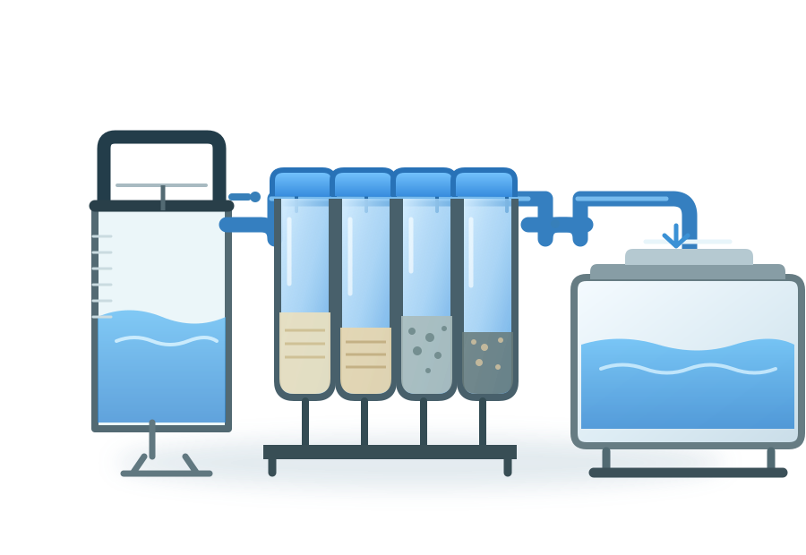
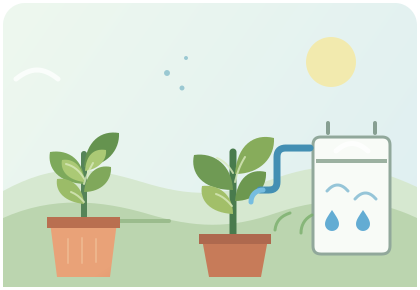
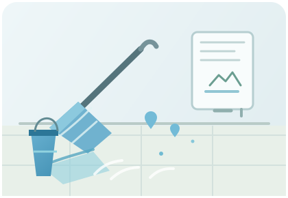
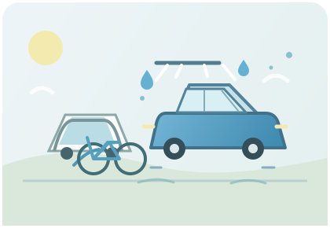
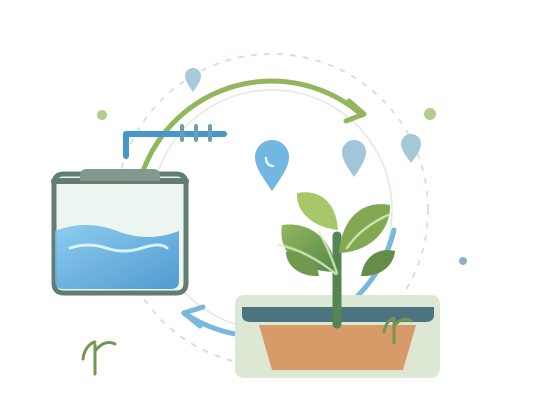

Aprovechar el agua gris
Explorar un segundo uso para agua de actividades domésticas compatibles.
Una nueva oportunidad para cada gota
AquaCiclo es una propuesta para filtrar agua gris y darle una segunda vida en tareas cotidianas no potables.
Una solución modular pensada para reutilizar.

Ilustración conceptual del sistema
EL RETO QUE NOS INSPIRA
Parte del agua de actividades domésticas, como lavar, se va por el desagüe. AquaCiclo propone recogerla y filtrarla para explorar su reutilización en tareas compatibles.
CONOCE AQUACICLO
Un sistema modular con filtración, conexiones y almacenamiento.
COMPONENTES DEL SISTEMA
La configuración final dependerá del armado y las pruebas del prototipo.
EL RECORRIDO DEL AGUA
Cada medio filtrante aporta una etapa distinta al recorrido propuesto.
Retiene residuos sólidos grandes antes de que el agua continúe.
RETENCIÓN INICIALAyuda a reducir ciertos compuestos, olores y sustancias.
ADSORCIÓNAyudan a retener partículas finas mediante el paso por el lecho filtrante.
FILTRACIÓN POR LECHORealiza una etapa de filtración final antes de la recolección.
FILTRACIÓN FINALEl desempeño de cada etapa depende del material, la instalación y las condiciones del agua.
UNA IDEA CON POTENCIAL
La propuesta prioriza la reutilización responsable y un sistema que se pueda adaptar.
Explorar un segundo uso para agua de actividades domésticas compatibles.
Organizar las etapas en componentes que se puedan adaptar o reemplazar.
Considerar el agua filtrada para riego y limpieza, según las condiciones de uso.
Potencial de reducir su uso en determinadas tareas; el ahorro aún no está medido.
Beneficios potenciales; su alcance requiere pruebas y depende de la instalación y el uso.
POSIBLES APLICACIONES
Usos no potables que pueden explorarse con agua tratada según las condiciones del proyecto.

EXTERIORUna opción para el cuidado de jardines y áreas verdes.

LIMPIEZAAgua de reúso para tareas de limpieza en superficies exteriores.

LAVADOUna posible alternativa para ciertos lavados exteriores.
Cada aplicación debe evaluarse según la calidad del agua y las condiciones locales.

CIRCULARIDAD EN ACCIÓN¿POR QUÉ AQUACICLO?
Combina etapas visibles de filtración, piezas modulares y almacenamiento para hacer más comprensible el reúso de agua gris.
La propuesta está en etapa de prototipo; su desempeño debe validarse con pruebas.
PROTOTIPO Y DEMOSTRACIÓN
Este espacio está listo para incorporar documentación del proyecto cuando esté disponible.
Agregar fotografía del sistema armado.
Agregar fecha, procedimiento y evidencia visual.
Incorporar únicamente mediciones verificadas.
No se muestran resultados de laboratorio, eficiencias ni ahorros porque aún no hay datos documentados.
EL SIGUIENTE PASO EMPIEZA AQUÍ
Conoce el sistema y descubre cómo está pensado el recorrido del agua.
Conoce AquaCiclo